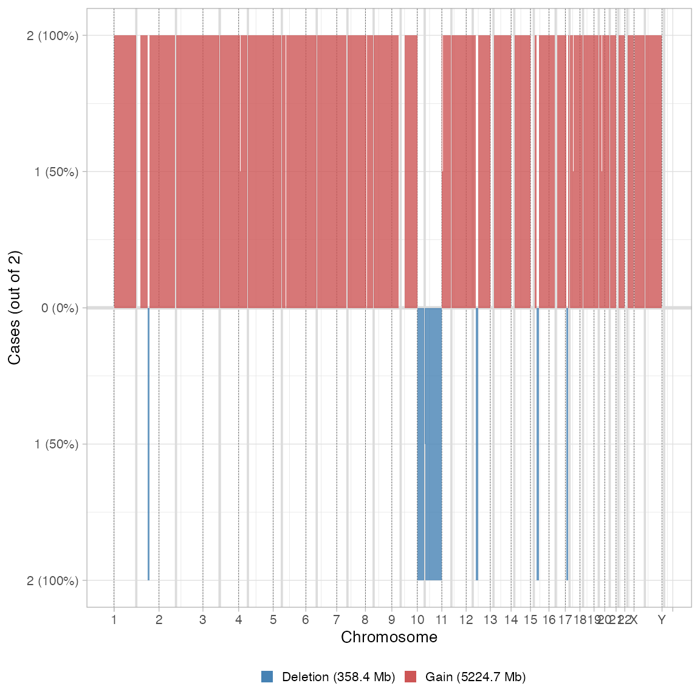

library(CNAqc)
#> ✓ Loading BMix, 'Binomial and Beta-Binomial univariate mixtures'. Support : <https://caravagn.github.io/BMix/>
#> ✓ Loading CNAqc, 'Copy Number Alteration quality check'. Support : <https://caravagn.github.io/CNAqc/>We work with the template dataset.
#> [ CNAqc - CNA Quality Check ]
#>
#> 2:2 [n = 7478, L = 1483 Mb] ■■■■■■■■■■■■■■■■■■■■■■■■■■■ { CTCF }
#> 4:2 [n = 1893, L = 331 Mb] ■■■■■■■
#> 3:2 [n = 1625, L = 357 Mb] ■■■■■■
#> 2:1 [n = 1563, L = 420 Mb] ■■■■■■ { TTN }
#> 3:0 [n = 312, L = 137 Mb] ■
#> 2:0 [n = 81, L = 39 Mb] { TP53 }
#> 16:2 [n = 4, L = 0 Mb]
#> 25:2 [n = 2, L = 1 Mb]
#> 3:1 [n = 2, L = 1 Mb]
#> 106:1 [n = 1, L = 0 Mb]
#> 26:2 [n = 1, L = 0 Mb]
#> 99:1 [n = 1, L = 0 Mb]Smoothing works with a simple algorithm that merges, inside each chromosome, all contiguous segments that have the same absolute copy number values (minnor and major allele counts), and are separated by up to \(\delta\) base pairs.
The default value of \(\delta = 10^6\) (1 megabase).
# Before smoothing
print(x)
#> ── [ CNAqc ] n = 12963 mutations in 267 segments (267 clonal + 0 subclonal). Ge
#>
#> 2:2 [n = 7478, L = 1483 Mb] ■■■■■■■■■■■■■■■■■■■■■■■■■■■ { CTCF }
#> 4:2 [n = 1893, L = 331 Mb] ■■■■■■■
#> 3:2 [n = 1625, L = 357 Mb] ■■■■■■
#> 2:1 [n = 1563, L = 420 Mb] ■■■■■■ { TTN }
#> 3:0 [n = 312, L = 137 Mb] ■
#> 2:0 [n = 81, L = 39 Mb] { TP53 }
#> 16:2 [n = 4, L = 0 Mb]
#> 25:2 [n = 2, L = 1 Mb]
#> 3:1 [n = 2, L = 1 Mb]
#> 106:1 [n = 1, L = 0 Mb]
#> 26:2 [n = 1, L = 0 Mb]
#> 99:1 [n = 1, L = 0 Mb]
#> ℹ Sample Purity: 89% ~ Ploidy: 4.
# After smoothing
x = smooth_segments(x, maximum_distance = 1e6) # default
#> Smoothing chr1 with 37 segments: [1-24] [27-30] [31-33] [34-37]
#> Smoothing chr10 with 8 segments: [1-2] [3-4] [5-8]
#> Smoothing chr11 with 22 segments: [1-7] [8-9] [10-22]
#> Smoothing chr12 with 13 segments: [2-3] [12-13]
#> Smoothing chr14 with 2 segments: [1-2]
#> Smoothing chr15 with 9 segments: [1-5] [7-9]
#> Smoothing chr16 with 10 segments: [1-6] [8-10]
#> Smoothing chr17 with 10 segments: [4-5] [6-7] [8-10]
#> Smoothing chr18 with 8 segments: [1-2] [3-8]
#> Smoothing chr19 with 5 segments: [2-5]
#> Smoothing chr2 with 18 segments: [1-8] [10-12] [14-18]
#> Smoothing chr20 with 9 segments: [1-3] [4-9]
#> Smoothing chr21 with 2 segments: [1-2]
#> Smoothing chr22 with 3 segments:
#> Smoothing chr3 with 19 segments: [1-7] [8-13] [15-19]
#> Smoothing chr4 with 8 segments: [1-4] [5-8]
#> Smoothing chr5 with 6 segments: [1-2] [3-5]
#> Smoothing chr6 with 4 segments: [1-2] [3-4]
#> Smoothing chr7 with 46 segments: [1-5] [9-27] [36-38] [39-41] [43-46]
#> Smoothing chr8 with 18 segments: [1-4] [5-11] [12-18]
#> Smoothing chr9 with 3 segments: [1-2]
#> Smoothing chrX with 6 segments: [1-2] [3-6]
#> ✓ Smoothed from 267 to 87 segments with 1e+06 gap (bases).
#> ℹ Creating a new CNAqc object. The old object will be retained in the $before_smoothing field.
#> [ CNAqc - CNA Quality Check ]
#> ℹ Using reference genome coordinates for: hg19.
#> ℹ Input n = 12963 mutations for 87 CNA segments (87 clonal, 0 subclonal)
#> Warning in map_mutations_to_segments(snvs, cna %>% filter(CCF == 1)): [CNAqc] a
#> karyotype column is present in CNA calls, and will be overwritten
#> ✓ Mapped n = 12963 mutations to clonal segments (100% of input)The old obbject is retained inside the new one
print(x$before_smoothing)
#> ── [ CNAqc ] n = 12963 mutations in 267 segments (267 clonal + 0 subclonal). Ge
#>
#> 2:2 [n = 7478, L = 1483 Mb] ■■■■■■■■■■■■■■■■■■■■■■■■■■■ { CTCF }
#> 4:2 [n = 1893, L = 331 Mb] ■■■■■■■
#> 3:2 [n = 1625, L = 357 Mb] ■■■■■■
#> 2:1 [n = 1563, L = 420 Mb] ■■■■■■ { TTN }
#> 3:0 [n = 312, L = 137 Mb] ■
#> 2:0 [n = 81, L = 39 Mb] { TP53 }
#> 16:2 [n = 4, L = 0 Mb]
#> 25:2 [n = 2, L = 1 Mb]
#> 3:1 [n = 2, L = 1 Mb]
#> 106:1 [n = 1, L = 0 Mb]
#> 26:2 [n = 1, L = 0 Mb]
#> 99:1 [n = 1, L = 0 Mb]
#> ℹ Sample Purity: 89% ~ Ploidy: 4.
# The new has theoretically smaller segments
print(x)
#> ── [ CNAqc ] n = 12963 mutations in 87 segments (87 clonal + 0 subclonal). Geno
#>
#> 2:2 [n = 7478, L = 1493 Mb] ■■■■■■■■■■■■■■■■■■■■■■■■■■■ { CTCF }
#> 4:2 [n = 1893, L = 333 Mb] ■■■■■■■
#> 3:2 [n = 1625, L = 362 Mb] ■■■■■■
#> 2:1 [n = 1563, L = 424 Mb] ■■■■■■ { TTN }
#> 3:0 [n = 312, L = 139 Mb] ■
#> 2:0 [n = 81, L = 39 Mb] { TP53 }
#> 16:2 [n = 4, L = 0 Mb]
#> 25:2 [n = 2, L = 1 Mb]
#> 3:1 [n = 2, L = 1 Mb]
#> 106:1 [n = 1, L = 0 Mb]
#> 26:2 [n = 1, L = 0 Mb]
#> 99:1 [n = 1, L = 0 Mb]
#> ℹ Sample Purity: 89% ~ Ploidy: 4.
#> ✓ These segments are smoothed; before smoothing there were 267 segments.You can visualise the effect of the smoothing automatically using CNAqc functions.
plot_smoothing(x)
#> Scale for 'fill' is already present. Adding another scale for 'fill', which
#> will replace the existing scale.
#> Warning: Graphs cannot be horizontally aligned unless the axis parameter is set.
#> Placing graphs unaligned.
#> Scale for 'fill' is already present. Adding another scale for 'fill', which
#> will replace the existing scale.
#> Warning: Graphs cannot be horizontally aligned unless the axis parameter is set.
#> Placing graphs unaligned.
plot_multisample_CNA(list(`Before` = x$before_smoothing, `After` = x))